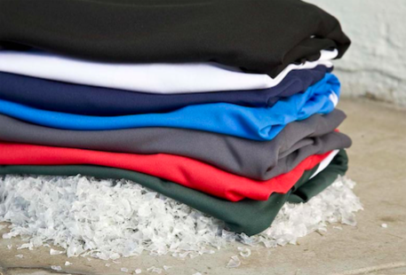
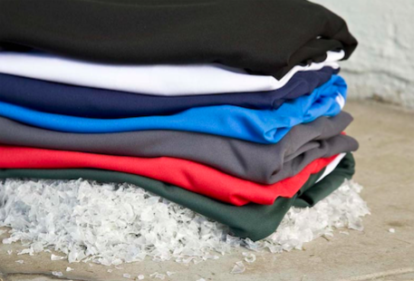
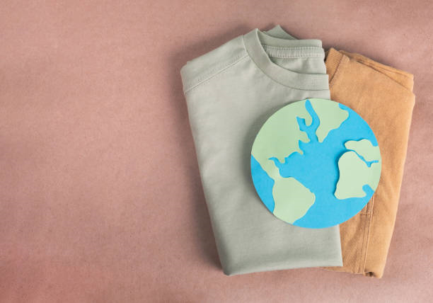
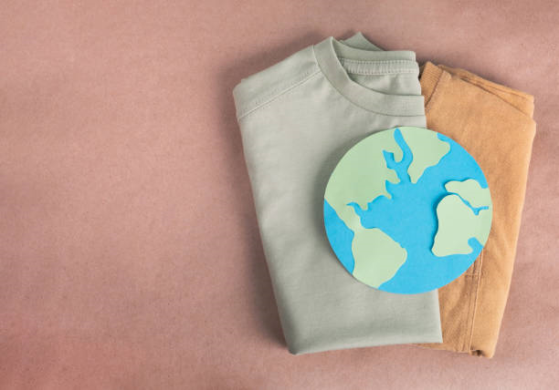

Tejiendo un futuro circular y sustentable en la moda
En vez de un proceso productivo lineal y extractivo, en TerraTextil trabajamos todos los días para construir nuestra cadena de valor completa bajo un modelo circular, restaurativo y regenerativo.
Nos alejamos del modelo producir-desechar que impera en la sociedad y pasamos a un modelo en el que diseñamos ropa "hecha para hacerla de nuevo". Esto significa que cuando una prenda llega al final de su vida útil, sus materiales se mantienen dentro de la cadena. Estos pueden usarse productivamente una y otra vez, extendiendo así su valor y generando beneficios positivos para toda la sociedad.
Bill Reed explica que existe la posibilidad de que surja una cultura regenerativa como resultante de encontrar y vivir nuevas formas de relacionarse con uno mismo, con la comunidad y con la vida como un todo. En el núcleo de la creación de culturas regenerativas hay una invitación a vivir los cuestionamientos de forma gregaria, todos juntos.
Cambiar la forma en que funcionan los procesos de producción de ropa no es una tarea fácil.
Se divide la cadena de valor en dos etapas para explicar mejor el flujo de valor a través del modelo: primero, el proceso de producción en sí, que incluye la recolección de materiales, la fabricación de prendas sustentables y el envío a los clientes; y segundo, el impacto creado a partir de las ventas de los productos, que incluye la reducción de residuos textiles, la conservación de recursos y la promoción de prácticas sostenibles en la industria de la moda.

Proceso de recolección: el primer círculo
Nuestro proceso de recolección comienza con los colaboradores de TerraTextil en diversas regiones. Ellos se encargan de recolectar una variedad de materiales, incluyendo textiles recuperados de diversas fuentes, así como fibras naturales recicladas, como algodón, lana y lino, que de otro modo afectarían negativamente al medio ambiente.
Al vender estos materiales recuperados a TerraTextil, los pequeños emprendedores generan ingresos adicionales, los cuales utilizan como capital inicial para hacer crecer sus propios negocios.
De esta manera, nuestros colaboradores no solo dependen de la recolección de desechos; también adquieren herramientas y conocimientos para gestionar eficazmente sus emprendimientos, lo que les permite prosperar y desarrollarse de manera sostenible junto con sus comunidades. Así, los desechos se transforman en oportunidades de crecimiento y desarrollo.
Reciclaje y manufactura: segundo círculo
Los desechos textiles que recibimos de nuestros colaboradores en TerraTextil son enviados a ECONYL®, líder en reciclaje y garantía de calidad de la materia prima.
El sistema de regeneración ECONYL® se compone de 4 etapas (Rescatar-Regenerar-Rehacer-Reimaginar):
Rescatar: El proceso de regeneración en TerraTextil comienza rescatando desechos textiles, organizándolos y limpiándolos para recuperar todas las fibras posibles. Este paso es liderado por nuestros colaboradores en diferentes regiones, incluyendo aquellos a quienes nos referimos en el primer círculo.
Regenerar: A través de un proceso radical de regeneración y purificación, los desechos textiles se reciclan y devuelven a su estado de pureza original. Esto significa que las fibras regeneradas por TerraTextil son exactamente iguales a las fibras vírgenes.
Rehacer: Las fibras regeneradas de TerraTextil se convierten en hilos para la producción de nuestras prendas sustentables.
Reimaginar: La característica notable de las fibras regeneradas de TerraTextil es que pueden ser recicladas infinitas veces, sin perder nunca su calidad.
Después de este proceso, los residuos se transforman en hilos y se envían a fabricantes en diversas ubicaciones.

Embalaje
Nuestros productos terminados, se envían a los clientes con un enfoque en utilizar materiales de embalaje lo más sostenibles posible. Nuestros folletos están impresos en papel reciclado, las cajas están hechas de cartón reciclado y son fácilmente reciclables o reutilizables. El relleno para los paquetes está hecho completamente de almidón de maíz, lo que los hace biodegradables y solubles en agua. Además, son reutilizables y requieren menos energía para producirlos en comparación con alternativas como la espuma de poliestireno.

Cerrando el círculo
Alentamos a nuestros clientes a devolver sus productos al final de su vida útil para evitar la generación de nuevos residuos. A cambio, ofrecemos un descuento en la compra de cualquier nuevo producto de TerraTextil.
Los materiales textiles usados pueden ser reciclados y las prendas pueden ser regeneradas gracias a nuestro enfoque en TerraTextil, lo que significa que con la ropa vieja podemos producir nuevas prendas, iniciando nuevamente el ciclo circular.

Impacto post venta
Con los ingresos generados por las ventas, financiamos un emocionante programa de 4 años desarrollado por Balloon Latam en el icónico Valle de Cochamó y Río Puelo, conocido en el extranjero como "el Yosemite de Sudamérica".
El Valle de Cochamó alberga una población de 4.023 habitantes en un área de 3.908 km cuadrados, caracterizada por una alta dispersión demográfica y una rica biodiversidad. Esta región alberga el 99% de bosque nativo y es hogar de más de 138 especies de fauna, incluidos los huemules, una especie en peligro de extinción.
A través de los programas de intervención de Balloon Latam, proporcionamos herramientas para el desarrollo personal y comunitario en la comuna de Cochamó, teniendo siempre en cuenta la realidad local, las condiciones culturales y geográficas, así como las posibilidades de desarrollo productivo de la zona. Además, capacitamos a agentes de cambio y líderes sociales para empoderar a la comunidad.
En TerraTextil creemos que un entorno natural con una comunidad empoderada y una economía basada en la conservación del medio ambiente tiene mayores posibilidades de ser preservado.

 

 
